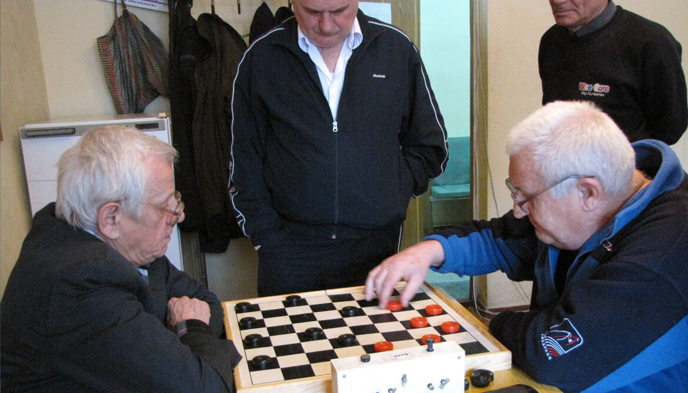
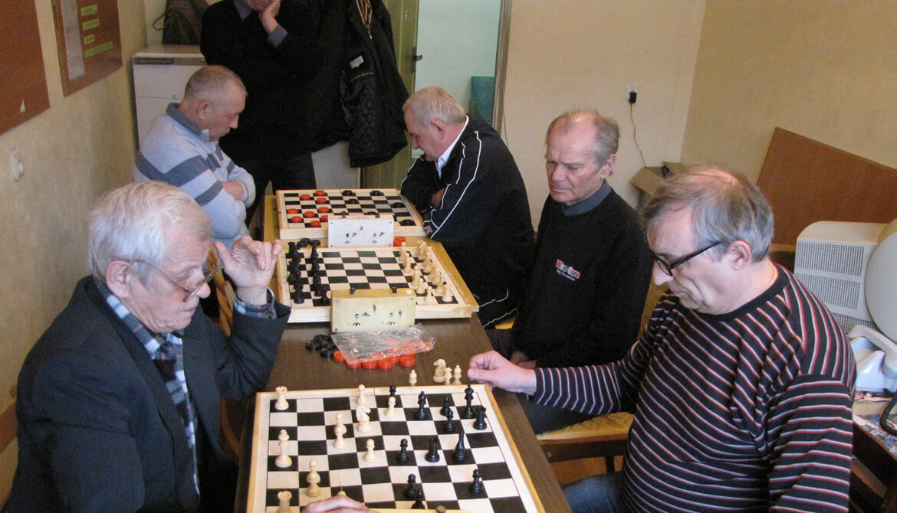

Шахматы и шашки - 13-й ЧЕМПИОНАТ КП "ХТС"
25 февраля 2017 года в субботу состоялся традиционный чемпионат "Харьковских тепловых сетей" по шахматам и шашкам.
На это состязание собрались 7 любителей интеллектуальных игр.
По две медали различного достоинства взяли Александр Зинченко и Виктор Бака.
Абсолютного результата удалось достичь Александру Зинченко в турнире по шашкам.
Турнир по шашкам: | |||||||||||
| # | Игрок | 1 | 2 | 3 | 4 | 5 | В | Н | П | О | |
| 1 | Зинченко Александр Андреевич | 2 | 2 | 2 | 2 | 4 | 0 | 0 | 8 | ||
| 2 | Бака Виктор Михайлович | 0 | 1 | 2 | 2 | 2 | 1 | 1 | 5 | ||
| 3 | Тертычный Сергей Владимирович | 0 | 1 | 2 | 0 | 1 | 1 | 2 | 3 | ||
| 4 | Квития Мурман Иродиевич | 0 | 0 | 0 | 2 | 1 | 0 | 3 | 2 | ||
| 5 | Шевченко Валерий Анатольевич | 0 | 0 | 2 | 0 | 1 | 0 | 3 | 2 |
Подробности по шашкам:
Шевченко – Тертычный 2:0, Бака – Квития 2:0, Зинченко – Тертычный 2:0, Зинченко – Шевченко 2:0, Шевченко – Квития 0:2, Бака – Тертычный 1:1, Квития – Тертычный 0:2, Бака – Шевченко 2:0 (в), Зинченко – Квития 2:0, Зинченко – Бака 2:0
Виктор Бака выступил наиболее стабильно из всех участников в обоих видах.
Валерий Кошаков участвовал только в шахматном турнире и в нём одержал победу.
Турнир по шашкам: | |||||||||||
| # | Игрок | 1 | 2 | 3 | 4 | 5 | В | Н | П | О | |
| 1 | Кошаков Валерий Егорович | 2 | 1 | 2 | 2 | 3 | 1 | 0 | 3,5 | ||
| 2 | Бака Виктор Михайлович | 0 | 2 | 2 | 2 | 3 | 0 | 1 | 3 | ||
| 3 | Зинченко Александр Андреевич | 1 | 0 | 2 | 0 | 1 | 1 | 2 | 1,5 | ||
| 4 | Потехин Александр Иннокентиевич | 0 | 0 | 0 | 2 | 1 | 0 | 3 | 2 | ||
| 5 | Квития Мурман Иродиевич | 0 | 0 | 2 | 0 | 1 | 0 | 3 | 2 |
Подробности по шахматам:
Потехин – Зинченко 0:1 (в), Кошаков – Квития 1:0 (в), Бака – Потехин 1:0, Кошаков – Потехин 1:0, Зинченко – Бака 0:1, Квития – Зинченко 1:0, Зинченко – Кошаков 0,5:0,5 (пат), Потехин – Квития 1:0 (в), Бака – Квития 1:0 (в), Кошаков – Бака 1:0.
